Big Orange Crayonmusical thingsUltimate Fake Book, Wetwerks and the Orange Valentine's, Albany, NY May 18th, 2001 Pictures at the bottom! Believe it or not, this was the first time that Ariel and I went to Valentine's together in six months, so you know that that if this show didn't rock, we would have kicked some ass. Luckily there wasn't any blood on our hands when we got home... We showed up a little late because we went to see her younger brother be in a play, so we only caught the last few songs of Ultimate Fake Book's set, which is kind of too bad since they were really good. I guess they're punk. I really liked them, Ariel loved them, so there you go. I wish I could say the same about Wetwerks. I mean, I can't really dis on a band because they play a genre that I don't like, so I won't. They were sort of industrial/metal or rap/metal, neither of which are capable of climbing above "suck" in my ears, but that's nothing against Wetwerks; they can play what they feel like and as far as I could tell they were good at it. Their lights gave me a headache though... But whatever, the Orange played last and it was all fun from there on in. We hadn't seen the Orange in six months either and were really curious about how they were doing. They had some new songs that were really nice and the old one were just as great as ever, too. Not only that, but I thought it was a great show experience-wise. A great moment was when Bob the bass player asked for permission to try something and started an impromtu cover of (I think) a Twisted Sister song. "I wanna rock," he said, and was joined by everyone else in doing so. Lots of people, including Ariel and I, went up on stage with them for that. There was also crazy saxophone, harmonica and cello action. After an encore or two, they left the stage and we both bought copies of their new EP for $3 a piece. After the show, we decided not to break with tradition and went to the A-plus Mart that we always always always go to after shows because crazy shit always happens there. This time the old guy in the store (it's never the same person, either) was way too chipper for one in the morning, and yelled "smile!" at us as soon as we walked in and berated the woman behind us for not looking happy enough. I love that place. Pictures: Ultimate Fake Book: 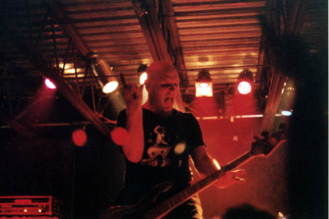 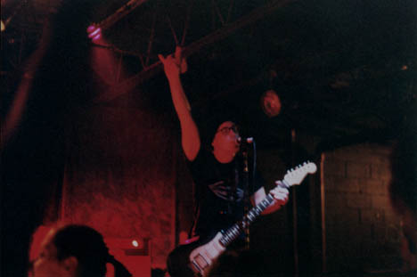 Slayer! Wetwerks: 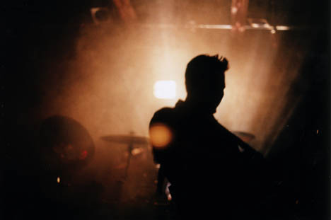 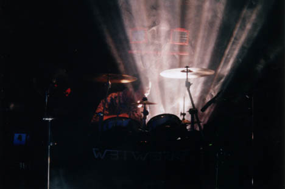 The Orange 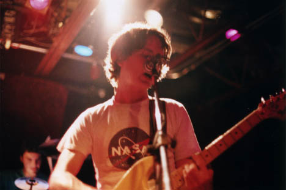 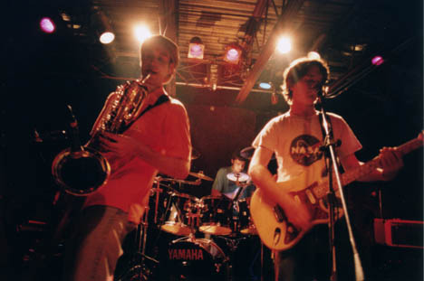 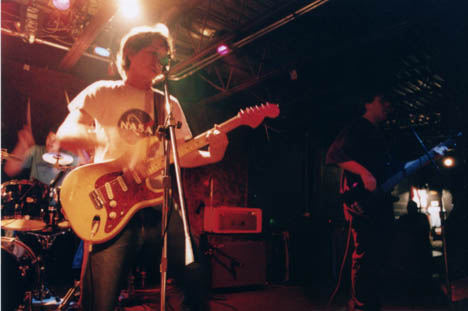 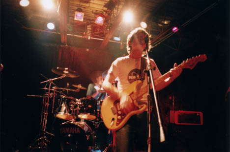 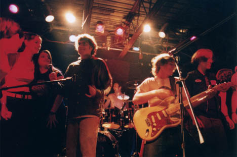 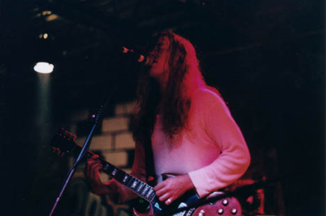 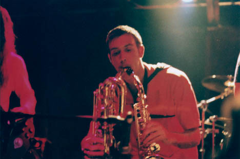 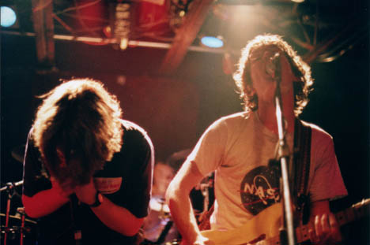 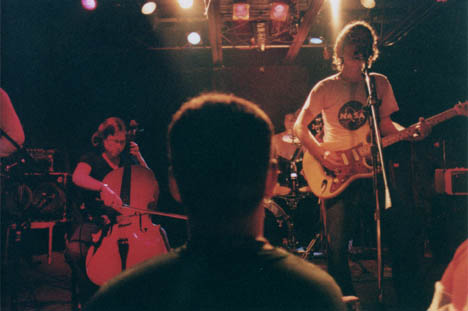 yada yada yada: Nikkormat FTN, Fuji Superia 1600, 24mm f/2.8, 50mm f/1.4, 105mm f/2.5 Nikkors. Shutter speeds from 1/30 to 1/60. Yay. Please don't post these elsewhere unless you're in one of the bands or are a nice person. |